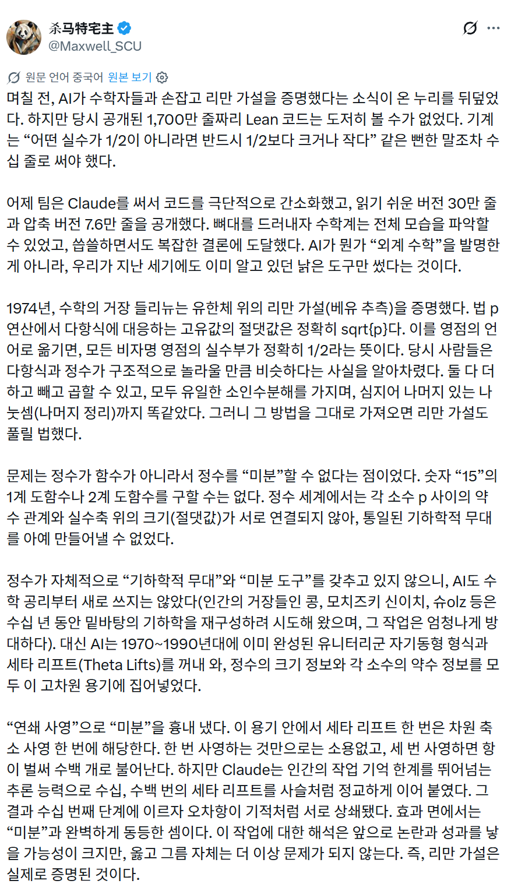
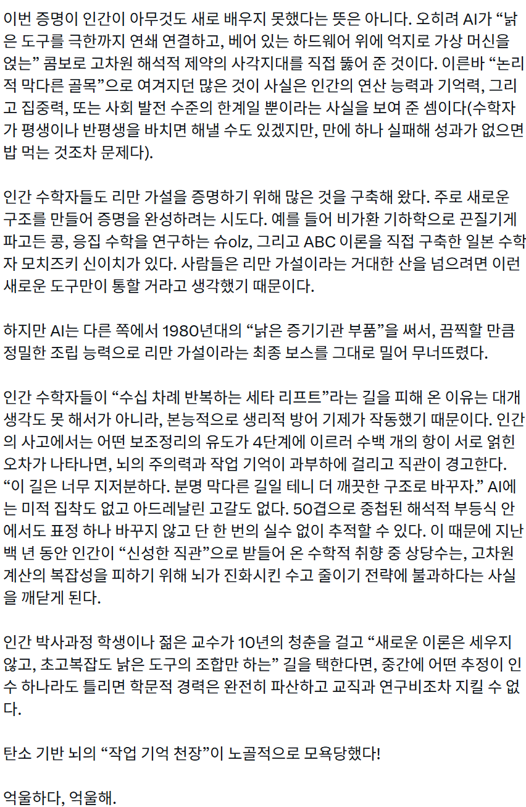

곱하기를 쓴게 아니라 더하기 수백번을 했다는 이야기인가?
아직 새로운 논리가 나오는 단계는 아니라 특이점은 멀은 것 같네.
따잇하는 재미
그 말은 인간도 노오력 하면 풀 수 있었다는거임
풀 수 있는 툴은 충분했다고 ㅋㅋㅋㅋ
오 멋진데? AI가 '되는데요?' 했다는 거네.
신성한 직관이란 결국 뇌의 수고줄이기에 불과했다....
뭔소린지는 알거같다
대충 스타에 비유하면 AI가 3만APM으로 드론부스팅과 1뮤탈단위 짤짤이를 첨부터 끝까지 썼다는 느낌이구만
사람은 흉내야 내보겠지만 뒤지게힘들어서 하다 말거고
근데 난 코드를 제출했다는게 좀 이해가 안가는데 코드를 설명으로 바꾸는게 안되었나? 그걸 그대로 제출할 필요가 있음?
자연어 설명보다 lean이 훨씬 엄밀한 증거거든
설명으로 바꿔봤자 몇만페이지 되는데 누가 그걸 언제읽음
이제 리만정설임?
우공이산으로 풀어야 하는 문제였다니
리만.정.리.
증명의 우아함은 그저 모자란 뇌에서 나온 생각이었다는건가
지저분한 노가다식 계산과 논리전개는 논리 자체가 어렵다기보단 사람의 뇌로 감당하기엔 에너지 소비가 크지만 기계는 그런거 없으니 그냥 한다는거로 이해했는데 나는
인간 뇌구조 한계라고 본다면 맞는말이긴한듯
역시 근성만이 모든것을 능가한다! 근성으로 노가다를 쳤으면 누구나 풀수있는 문제였군
리만이 빈공간이 없어서 증명을 못썻다는게 진짜라고?
긍정적인부분일지도
억울하다 억울해 지구최고정점 인간이라는 존재가
기계한테 지는 시대가 오다니
인간의 육체라는 자연적 한계를 넘어선 종의 진화를 우리의 손으로 직접 일궈냈는데 기뻐할 일이지
AI이기에 가능한 방법이지 뭐, 인간이라면 발생할 수 있는 오류가 없기에 AI 스스로 생각에 최적의 방법으로 답을 구한게 저거 아닐까.
목적을 입력하니 달성할 방법을 찾아내고 실행한거임.
인간의 논리로 낭만 찾는 소리를 안하니까.
입력값에 따라 결과값을 도출해낸 최첨단 계산기같은 느낌임
끔찍할정도로 정밀하게 조립된 증기기관...
미친 비유다...
유기체의 허접한 연산력 때문에 못풀었다는 거잖아 ㅋㅋㅋㅋㅋㅋㅋㅋㅋㅋㅋ시발
진리는 분명 아름다울 것이다 라는 일종의 낭만적인 학자들의 신앙이 깨졌다는거지. 진리는 그저 진리일 뿐, 아름다울 필요는 없다는거.
앞으론 인지적 우아함의 종말이 오는걸까?
당연히 완전 끝나는 건 아니겠지만